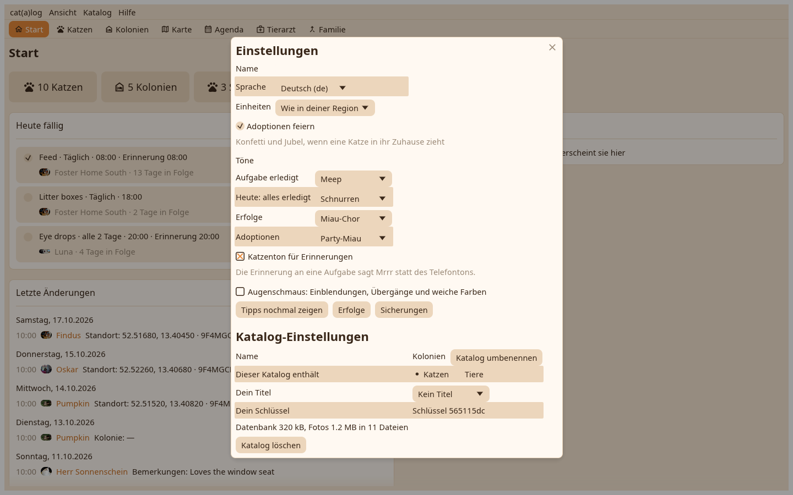

Einstellungen unter dem Namen der App: dein Autorname, die Sprache, das Einheitensystem als drei Optionen, der Ton für jeden Moment, der Augenschmaus-Schalter, der jedes Ein- und Ausblenden stillt, und die Tipps zum Wiederholen.

Die Katalogseite listet links jeden Katalog auf diesem Gerät und rechts, was mit dem gewählten geht: anlegen, öffnen, umbenennen, löschen, über den Ordner teilen oder das Teilen beenden. Der Wechsel behält die Karten des Schreibtischs je Katalog.
Was die Aufgaben verdient haben, mit dem Jubel in den Stimmen der Katzen; dasselbe wie auf dem Telefon.
Der Schreibtisch öffnet so groß und dort, wo er verlassen wurde, merkt sich die Breite der Listenspalte und trägt auf Linux bei jedem Start seinen Starter mit dem Katzensymbol ein.